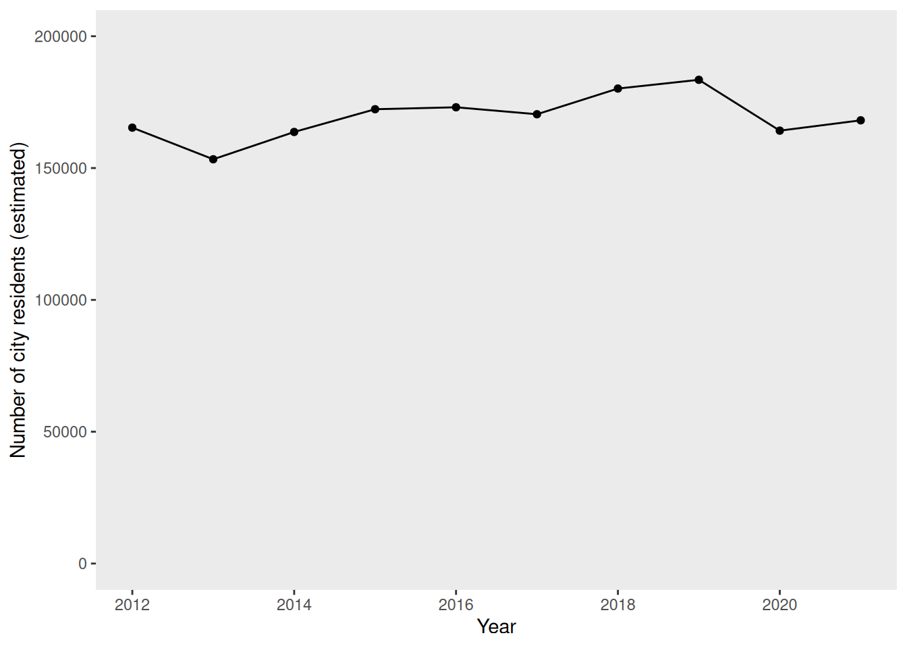
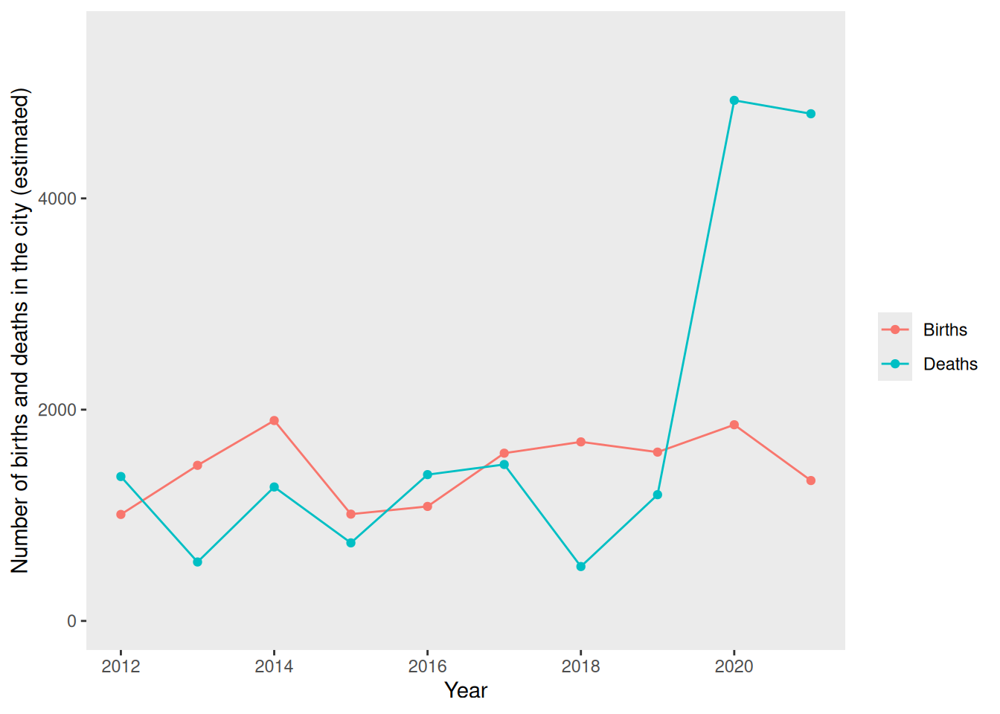

5 Group B Main Page
Baltyre Times
Breaking News
Worries Over Possible Outbreak of influenza in Baltyre
23 February, 2025
Anxiety intensifies in Baltyre as health officials investigate a potential outbreak of influenza, raising alarm bells across the region. Though yet to be formally confirmed as a pandemic, suspicions have intensified following a recent frightening surge in patients presenting with symptoms indicative of influenza.
Influenza, commonly known as the flu, is caused by influenza viruses. It spreads through respiratory droplets produced when infected individuals cough, sneeze, or talk. Symptoms include fever, cough, sore throat, runny or stuffy nose, body aches, headache, chills, and fatigue. Residents of Baltyre experiencing any of these symptoms are advised to contact their GP or dial 111 for health advice.
In a press release, the director of the Queen’s College in Baltyre noted a shocking uptick in individuals reporting symptoms consistent with those associated with influenza. Fears were first raised when the local GPs began reporting an unusual increase in patients with symptoms of influenza. While investigations are still ongoing, the possibility of a pandemic outbreak emerges as a major concern, prompting concern from health agencies.
In response to the increasing concerns, health officials have launched several contingency plans, and Baltyre have convened an Emergency Pandemic Response Team, which will be meeting on 2025-02-28 and attempting to find solutions that will stop the spread of the pandemic in Baltyre.
The First Minister assured residents that authorities are leaving no option unexplored in their efforts to safeguard public health, and furthermore urged residents to remain vigilant and cooperate with health directives from the Baltyre City Council. A statement released by the First Minister’s office read: “While there is no confirmation of an outbreak at this time, we are taking this situation very seriously.”
The people in Baltyre have already begun to weigh the possibility of a pandemic; potential consequences such as school closures, economic repercussions, and strain on healthcare resources, have sparked apprehension among residents, underscoring the need for swift and decisive action.
Contact Information for Further Updates:
More information will be posted on the Baltyre website as the situation develops: https://www.BaltyreCouncil.co.uk
The Baltyre Emergency Pandemic Response Team can be contacted on +44 01343 6438 1078 or at pandemic_response@Baltyre.co.uk
About the Author:
Ruwaida al-Hashim is a health correspondent at the Baltyre Times, specializing in public health and safety issues.She can be contacted at ra3127@BaltyreTimes.com.
Baltyre was granted city status in 1971. Located near Ailsa Falls, Baltyre is noted for its beautiful rose gardens and annual flower shows. Major industries in the city include chemicals, food and beverage, and agriculture.
Baltyre is well-served by public transport: there are 3 bus companies operating routes that cover the city and outlying areas, and road links to other major cities (the A67 to Kilmarnock and the the A86 to Motherwell.) Baltyre is further connected to regional towns and villages by rail services from the Baltyre railway station. Baltyre is also served by Baltyre Airport, which is 8 miles from the city centre and which offers daily flights to Milan, Stockholm, and Valencia.
Notable buildings in the city include Baltyre Castle, Baltyre Cathedral, and Dunrobin House. Baltyre also has a number of parks and green spaces and several biking and walking trails. The Baltyre heritage festival is held annually in April, and tourists also flock to Baltyre to take city ghost tours in summer. Baltyre is also noted as a hub of local arts and culture, with Parkside Hall and The Globe and Gale drawing in crowds for performances from local and international artists. The city is renowned for sports, with the Blues and Hornets teams representing the city for football and cricket, respectively.
Some of the key Baltyre features are summarized in the list below.
Public Facilities/Community Amenities
- Schools:
- 10 primary schools
- 2 secondary schools
- 1 college
- Nurseries: 19
- Care Homes: 2
- Restaurants and Cafes: 139
- Parks and Playgrounds: 3
- Libraries: 6
- Gyms and Sports Facilities: 11
- Prisons: 2
- Police and Fire Stations: 4
- Surgeries and pharmacies: 6
- Hospital: the Queen’s College
Refer to the “Data” tab for information about the city demographics, voting and polling data, and more information about the hospital.
Fact Sheet and General Information
Clinical Microbiology and Diagnosis Resources
Emails
Your committee has recently received a great deal of correspondence regarding the pandemic in Baltyre. A representative sample of these e-mails is shown below.
News/Blog Posts
Your committee has also been monitoring news and published blog posts about the pandemic in Baltyre, in order to better gauge public opinion. A representative sample of these is shown below.
Pandemic Report
Briefing:
Based on collated hospital reports and death certificates, it is believed that there have been 26 deaths due to influenza in Baltyre thus far
There are currently 534 patients in the Queen’s College with confirmed influenza, or symptoms consistent with influenza
There are currently 13 patients currently in the ICU with confirmed influenza
City Demographics, Polling, and Budget
The current population of Baltyre (as of December 2022) is 166895. The demographic data for the city is shown below.


The current provost of Baltyre was elected in 2020, as a member of a popular political party who made a number of election promises regarding a “Green New Deal” for Baltyre.

There are currently 169 elected councillors, representing the political parties in Baltyre as follows:
| Political Party | Number of Seats |
|---|---|
| New Horizon | 12 |
| Renewal Movement | 12 |
| Community First | 26 |
| Liberty League | 10 |
| Forward Together | 8 |
The overall budget (expenditures) for the 2023-2024 financial year was £487162564. A summary of expenditures by category for this financial year is shown below.
Hospital and Hospital Budget
The annual operating budget for financial year 2022-2023 was £2.7 million, and average expenditures are shown by category in the figure below.
- You can find more key information about the main hospital in Baltyre, the Queen’s College in the hospital dashboard.
Epidemiological Data
A team of scientists working together have in a PHS lab have isolated and cultured influenza virus (using a standard tissue culture model) from a number of patient samples taken during this outbreak; isolated influenza RNA from these cultures; reverse-transcribed this to DNA, and sequenced this DNA using an Illumina MiSeq platform; assembled the short paired-end reads; and compared these assemblies to the extant influenza sequences available in the NCBI databases. The results of these experiments are summarised in the table below.
| Patient | NCBI accession of closest database match to the NA genome segment |
|---|---|
| 1 | KU171017.1 |
| 2 | KU171017.1 |
| 3 | UZY70773.1 |
| 4 | KU171017.1 |
| 5 | KU171017.1 |
| 6 | UZY70773.1 |
| 7 | KU171017.1 |
| 8 | KU171017.1 |
| 9 | KU171017.1 |
| 10 | UUB84697.1 |
City Pandemic Planning Resources
COVID-19 health protection guidance released by Public Health Scotland
Tackling antimicrobial resistance 2019–2024: The UK’s five-year national action plan
UK One Health Report - Joint report on antibiotic use and antibiotic resistance, 2013–2017
Scottish One Health Antimicrobial Use and Antimicrobial Resistance in 2021
Hospital Pandemic Preparedness and Planning
Mer, Mervyn et al. “Critical Care Pandemic Preparation: Considerations and Lessons Learned from COVID-19.” Critical care clinics vol. 38,4 (2022): 761-774.
Tacconelli, Evelina et al. “Challenges of data sharing in European Covid-19 projects: A learning opportunity for advancing pandemic preparedness and response.” The Lancet regional health. Europe vol. 21 (2022): 100467.
Adelaja, I., Sayma, M., Walton, H., McLachlan, G., de Boisanger, J., Bartlett-Pestell, S., Roche, E., Gandhi, V., Wilson, G. J., Brookes, Z., Yeen Fung, C., Macfarlane, H., Navaratnam, A., James, C., Scolding, P., & Sara, H. (2020). A comprehensive hospital agile preparedness (CHAPs) tool for pandemic preparedness, based on the COVID-19 experience. Future healthcare journal, 7(2), 165–168.
Communications Resources
Matta, G. Science communication as a preventative tool in the COVID19 pandemic. Humanit Soc Sci Commun 7, 159 (2020).
Abdool Karim, Salim S. “Public understanding of science: Communicating in the midst of a pandemic.” Public understanding of science (Bristol, England) vol. 31,3 (2022): 282-287.
Royan, Regina et al. “Use of Twitter Amplifiers by Medical Professionals to Combat Misinformation During the COVID-19 Pandemic.” Journal of medical Internet research vol. 24,7 e38324. 22 Jul. 2022, doi:10.2196/38324
Tait, Margaret E et al. “Serving the public? A content analysis of COVID-19 public service announcements airing from March - December of 2020 in the U.S.” Preventive medicine reports vol. 29 (2022): 101971.
Epidemic Calculator
You may choose to include mathematical modeling as part of your decision making (for example, using an epidemic calculator or other models); if you do so, you should provide details of your modelling and predictions when you submit your group’s pro forma.
:::